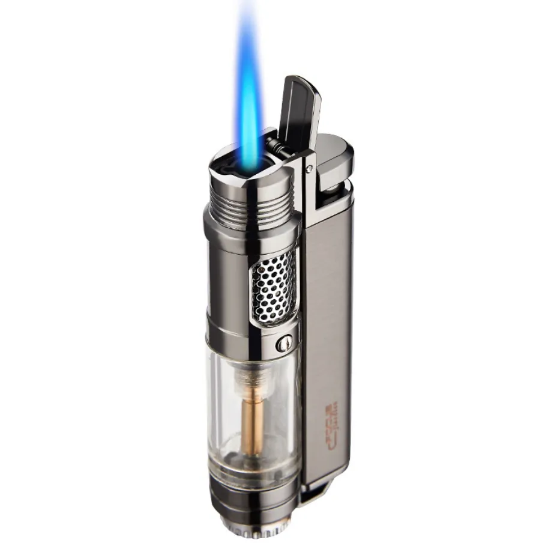

Shown below are some thinking questions. Below the question will be my response!
If a book could be created about you, what would the title of that book be?
The title of the book would probably be something along the lines of "I did it my way"
If you could be on any reality or game show, what would it be and why?
I would have to say America Says. It's a gameshow similar to the Price is Right, except you have to guess how Americans answered the question. I say America says because I will get lots of videos like that about people answering questions(typically trivia as part of a game) and it's really interesting to me. I don't really know why. I think it would also just be interesting to hear what people come up with.
You have been given a plane ticket to anywhere in the world. Where would you go? Why?
I would probably say Paris, France. Not necesarrily for the reason you think, though. First off, Paris is a nice city, when the workers aren't on strike and Macron is being a good boy. Good food and such. However, it also has one of the better rail networks and road systems in Europe. Therefore, I could get to Europe, Africa(if I really tried) and Asia without another plane ticket. So it's just the good decision to get around with only one plane ticket.
What 12 states out of the 50 United States in the U.S.A would you like to visit or revisit?
I'll do you one better than a list, I'll make a pretty little table.
The States
Really Really Want to Visit
Want to Visit Badly
Want to Visit
Washinton D.C.
Rhode Island
Puerto Rico
Virginia
South Carolina
New Mexico
California
Nevada
New Mexico
Texas
Colorado
Utah
If you were stranded on a deserted island, what is the one luxury item you would wish to have? Why?
I would want to have a cigar lighter. The reason is that they burn super hot so I can get fires started quickly. They are also pretty portable compared to something like a blowtorch.
(I've got a picture of one below.)

In addition to the one luxury item listed above, what are 10 addition items you would want/need on a deserted island?
Here's a little shopping list of those items.
Some things I would wanna bring
Charcoal in a container(bag, etc.) - For burning with my Cigar Lighter
An E-Tool(entrenching tool) - Can be used as a shovel, axe, or weapon for small game is need be
A high-end tent - For Obvious reasons
Thick wool/down blankets - For cold nights/days
Thinner blankets(cotton, etc.) - For warmer nights
Cold-weather clothing - For cold days
Warm-weather clothing - For hot days
A water purifier - Because salt water is bad for you
Signal Mirror - To make sure people know I'm there(need all the attention you can get on a deserted island)
A fishing pole - For Obvious reasons
What is a list of your five favorite recipies?
My Favorite Recipies
Bannana Bread(even though I don't like Bannanas)
Rahm Schnitzel
Chicken in Gravy with Rice
Chicken and Waffles
Big Mac Sauce
What are the ingedients for one of those recipies?
Here's a list of ingedients for Big Mac Sauce(with stuff you have at home)
Big Mac Sauce Ingredients
1/2 Cup - Mayonaise(if it's not too spicy for you)
1 Tablespoon - Minced White Onion(Or Onion powder)
1 Teaspoon - White Vinegar
1 Teaspoon - Granulated Sugar
1/8 Teaspoon - Salt
Here's a little sneak peek of what it will look like
What is a quote that you love?
Here's one by Lewis B. "Chesty" Puller, USMC. The man with the best quotes of all time.
"They are in front of us, behind us, and we are flanked on both sides by an enemy that outnumbers us 29:1. They can’t get away from us now." - General Lewis B. "Chesty" Puller, USMC